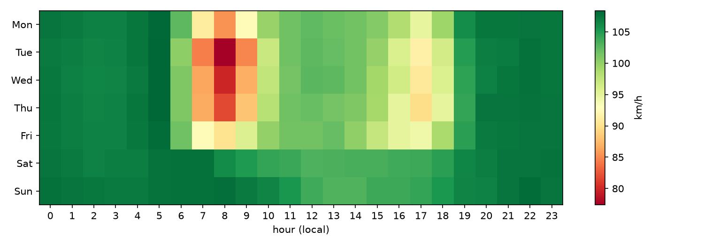
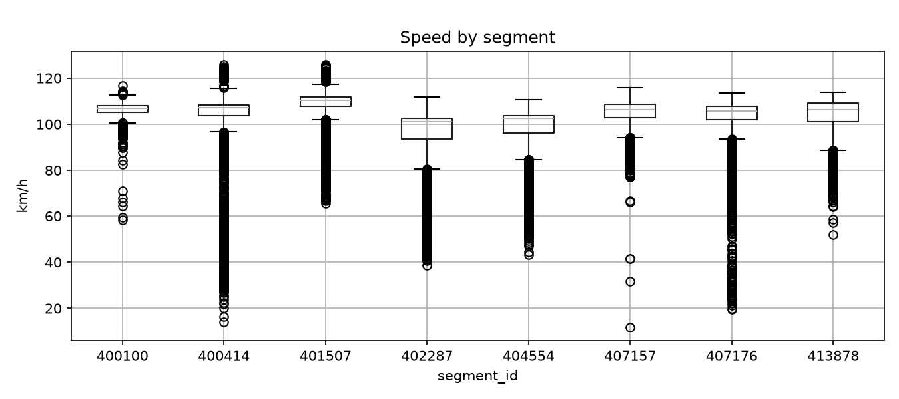
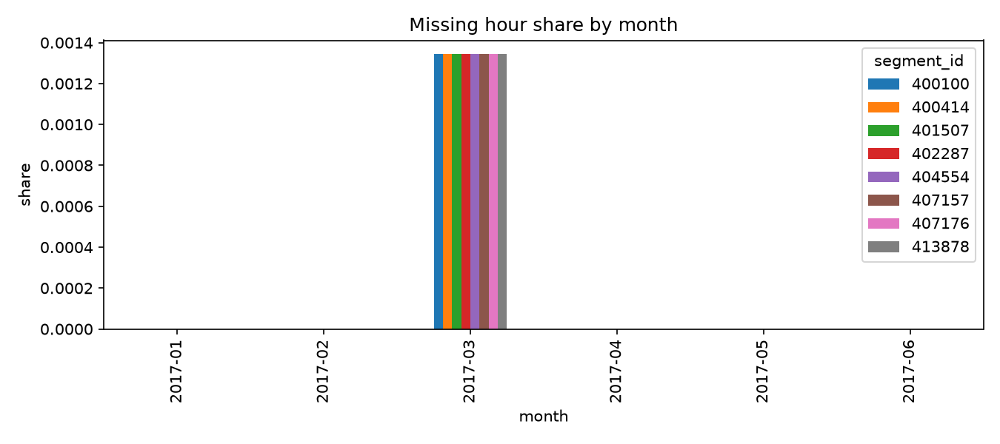
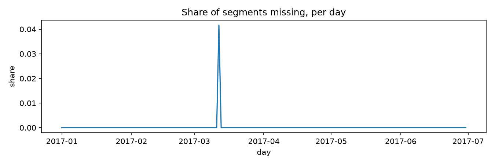

01
Research question
Can a model trained on past speeds, weather and calendar information predict the average speed on road segments two hours ahead, and how much does it beat simple baselines?
Row unit
One road sensor (segment) at one hour.
Target
Average speed on that segment at hour t + 2, in km/h.
Prediction time
Hour t, using only information that is available at t.
02
Data
PEMS-BAY: 5-minute speed readings from Caltrans PeMS freeway detectors, distributed with the DCRNN repository.
We use 8 segments averaged to hourly values for January to June 2017. Weather comes from Open-Meteo and
holidays from the Python holidays package.
Almost complete
Only 0.023% of hours are missing: the single hour skipped by the March daylight-saving change, the same for every segment.
Clean
No duplicate rows. Weather has no gaps. Timestamps are local time, confirmed by the rush-hour pattern below.
One stuck sensor
Segment 400100 repeats the same value for up to 24 hours on a few days (e.g. 20 April and 18 May). Kept, and flagged as a limitation.




03
Preprocessing
Every step is written so that a forecast made at hour t never uses information from after t.
- Zeros become missing. The raw file marks outages with 0 mph (0.003% of readings). They are turned into missing values before averaging.
- mph to km/h. Speeds are multiplied by 1.609344.
- Hourly averages. Twelve 5-minute readings per hour, kept only when at least 9 of 12 exist (the 9-of-12 rule).
- Neighbours. Each segment gets the speed of its nearest sensors by latitude/longitude distance. This is distance, not road connectivity.
- Weather and calendar. Temperature, humidity and precipitation from Open-Meteo, a holiday flag, hour and weekday.
- Leakage rules. Features use only data up to hour t; a test in
src/testschecks this.
04
Baselines and methods
Persistence
“Speed in two hours equals speed now.” The simplest forecast and the one any model must beat.
Hour-of-week mean
The average speed for this weekday and hour in the training data. It captures the weekly rhythm with no learning.
The trained models are added here once the final comparison has been run (see Results).
05
Evaluation
Chronological split with 2-hour gaps so a target never overlaps the next block.
- Tuning used training data only. The test set was used once.
- MAE (km/h) is the primary metric; RMSE is also reported.
- Skill = 1 − MAE / MAE of persistence. Above 0 means better than persistence.
- A daily block bootstrap gives a 95% interval for the test MAE.
06
Results
| Model | Validation MAE | Test MAE | Test RMSE | Skill vs persistence | 95% CI (test MAE) |
|---|
MAE and RMSE in km/h; lower is better. The highlighted row is the model chosen on validation data.
Interaction 1: Forecast explorer
Pick a segment, a day and a model. The chart compares the real speed with the forecast made two hours earlier.
07
Errors
Where does the model struggle? The grid shows the error by weekday and hour of the forecast origin. Hatched cells have too few observations to trust.
Interaction 2: Error heatmap
08
Limitations
Scope
Results describe these 8 segments and this half-year only.
Sensor outages
They affect both features and target. Segment 400100 has frozen stretches.
Missing information
No incident, roadworks or event data. Weather is observed at time t, not forecast.
Association, not causation
Patterns shift across seasons and infrastructure changes. Neighbours are by distance, not road connectivity.
09
Conclusion
To be written after the final test run: the answer to the research question, and what it does and does not show.
10
Reproduce
- Clone the repository and create the environment (see the README).
- Download the dataset into
data/raw/as described indata/raw/SOURCES.md. - Run the pipeline in order: build, features and split, train and select, final test, export.
- Run
pytest src/teststo check for leakage.
11
About
Author: Shrey Mevawala. AI tool use is documented in AI_USE.md.
Citations: PEMS-BAY and the DCRNN paper (Li et al., 2018); Open-Meteo; scikit-learn; XGBoost; Chart.js.